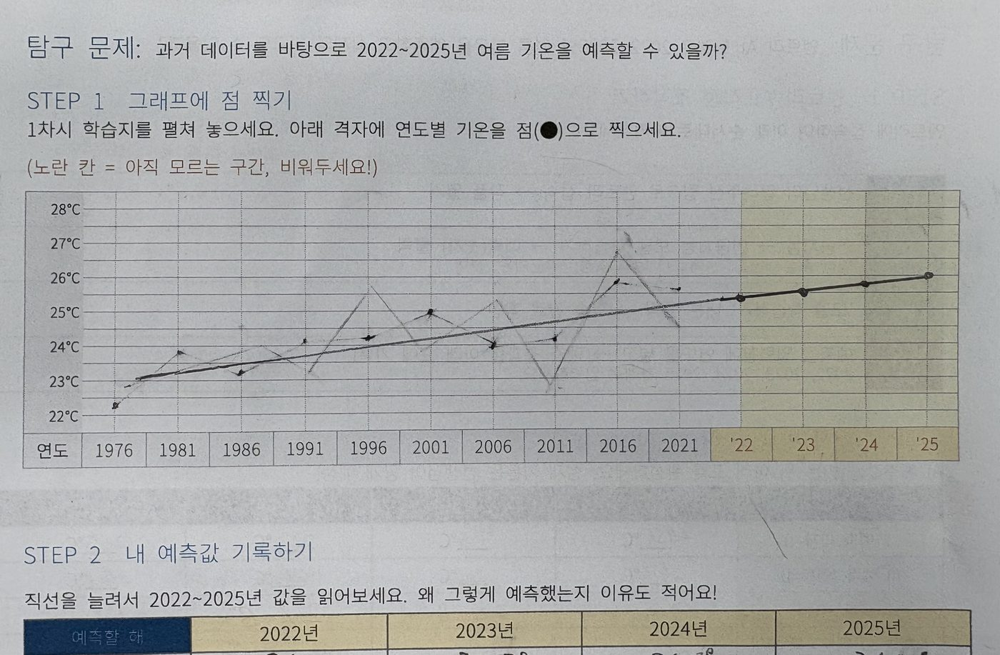
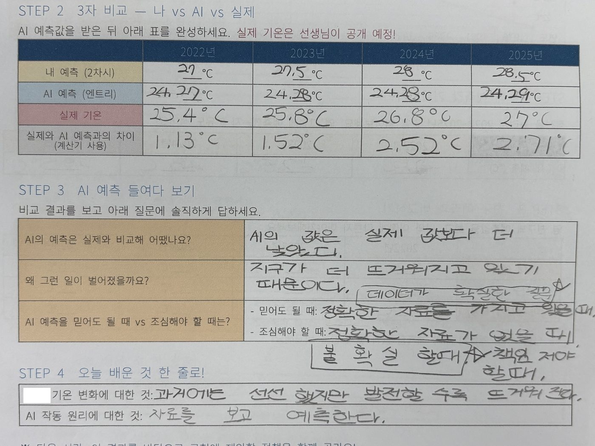
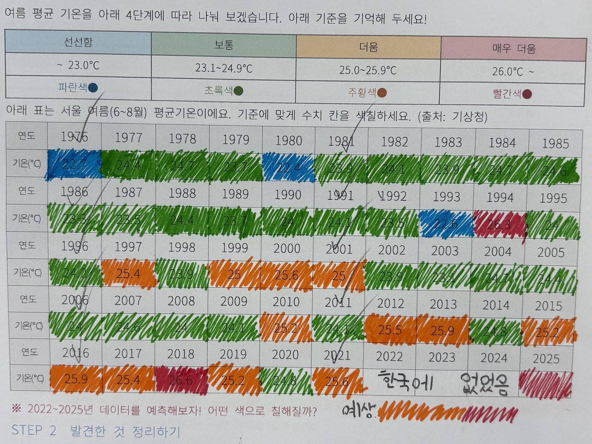

OUR STORY
🔎 우리가 이 제안을 만든 과정
데이터에서 시작해서 제안까지 — 우리가 탐구한 6단계예요
🤖1
AI에게 미래 기온을 예측해 보라고 했어요
기상청에서 서울의 1976~2021년 여름 기온 자료를 받아, 엔트리 AI로 선형 회귀 예측?을 돌렸어요. 그런데 AI가 예측한 2022~2025년 값보다 실제 기온이 더 높았어요!
연도🤖 AI 예측🌡️ 실제차이
202225.4℃25.4℃±0.0
202325.5℃25.8℃+0.3
202425.5℃26.8℃+1.3
202525.5℃27.0℃+1.5
AI는 46년 평균 추세대로 천천히 오를 거라 봤지만, 실제 지구는 그보다 훨씬 빨리 뜨거워졌어요.
📈 선형 회귀 예측
여러 해의 기온을 그래프에 점으로 콕콕 찍은 다음, 그 점들 사이를 가장 잘 지나가는 곧은 줄(직선)을 하나 긋고, 그 줄을 미래까지 쭉 늘여서 "몇 도쯤 될까?"를 읽어내는 방법이에요.
👉 우리가 2차시에 자로 직접 직선을 그어 예측했던 것과 똑같아요! AI는 이 직선을 아주 빠르고 정확하게 그어줄 뿐이에요.
📏 우리가 직접

점을 찍고 자로 직선을 그어 2022~2025년을 예측한 우리 활동지 — 이게 바로 '선형 회귀'예요
✏️ 우리가 직접

우리가 채운 '나 vs AI vs 실제' 비교표 — 실제 기온이 AI 예측보다 매년 더 높았어요
🔥2
지구가 AI 예측보다 더 빨리 뜨거워지고 있었어요
AI가 틀린 게 아니라, 지구가 너무 빨리 변하고 있던 거예요. 특히 2024년과 2025년은 AI 예측을 1℃ 넘게 앞질렀어요. 과거의 흐름만으로는 따라잡기 어려운 변화였죠.
🖍️ 우리가 직접

46년치 기온을 색칠해 봤더니 — 파랑·초록(선선)에서 점점 주황·빨강(더움)으로 변했어요
🛰️3
NASA 자료에서도 같은 사실을 확인했어요
미국 항공우주국(NASA)의 지구 기온 자료를 보니, 지금 지구가 더워지는 속도가 아주 옛날 자연적으로 더워지던 때보다 약 10배나 빠르다고 해요. 특히 더워진 것의 대부분이 최근 40년 사이에 일어났대요.
🔗 NASA 보고서 보기🌊4
이번 여름은 ‘엘니뇨’ 때문에 더 심했어요
태평양 바닷물이 평소보다 뜨거워지는 엘니뇨 현상까지 겹치면서, 폭염이 한층 더 강해졌어요. 기후 변화에 엘니뇨가 더해져 ‘예측 불허’의 더위가 찾아온 거예요.
🔗 엘니뇨 기사 보기🫶5
그렇다면 폭염에 더 약한 사람은 누구일까?
점점 심해지는 폭염 속에서, 똑같이 더운 게 아니라 더 위험한 사람들이 있다는 걸 알게 됐어요. 위에서 찾은 데이터를 보며 누가 가장 힘든지 함께 이야기했어요.
👵 어르신
👷 야외 노동자
🧒 어린이
🐾 반려동물
💡6
그래서 우리가 직접 대책을 만들었어요!
우리 힘만으로는 다 해결할 수 없으니, 서초구청이 함께 도와주면 좋겠어요. 그래서 폭염에 약한 사람들을 지킬 수 있는 5가지 정책을 직접 생각해 제안하기로 했어요.
아래에서 우리의 제안을 확인해 주세요 👇